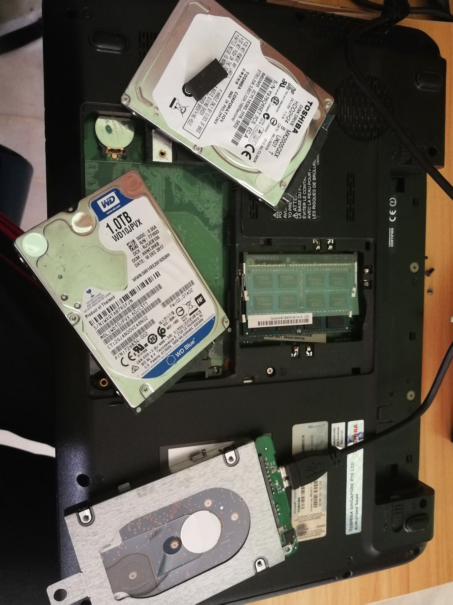
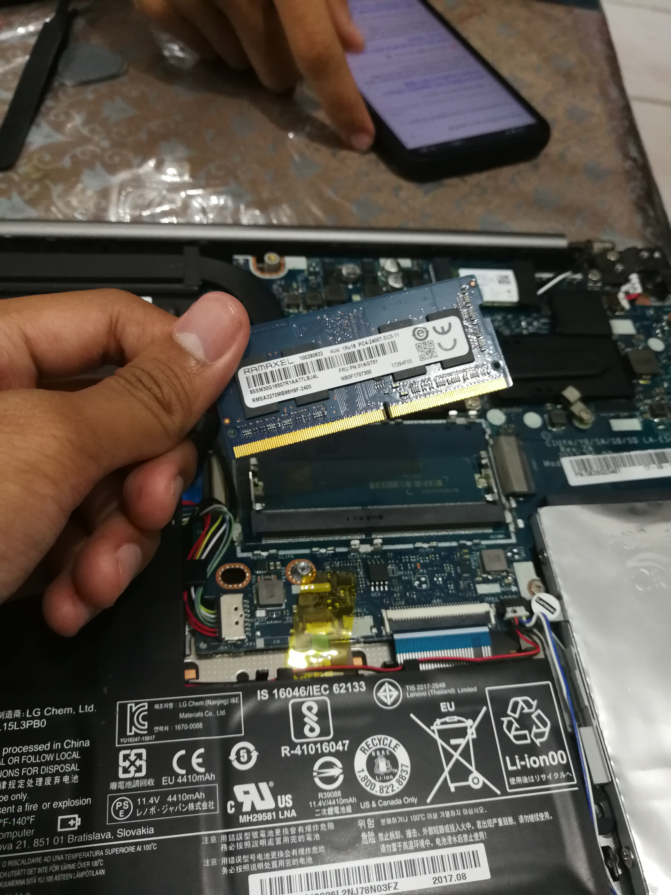
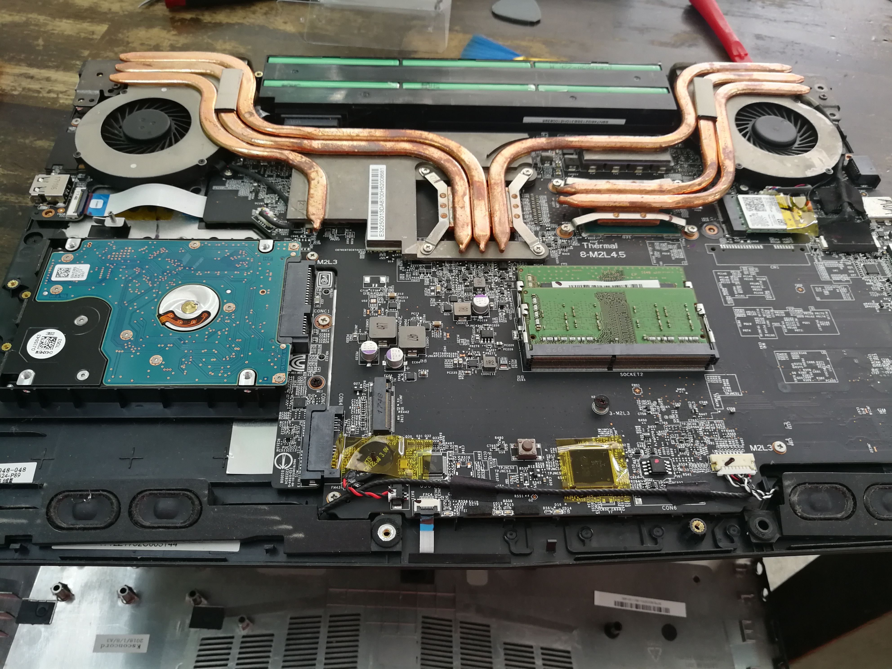
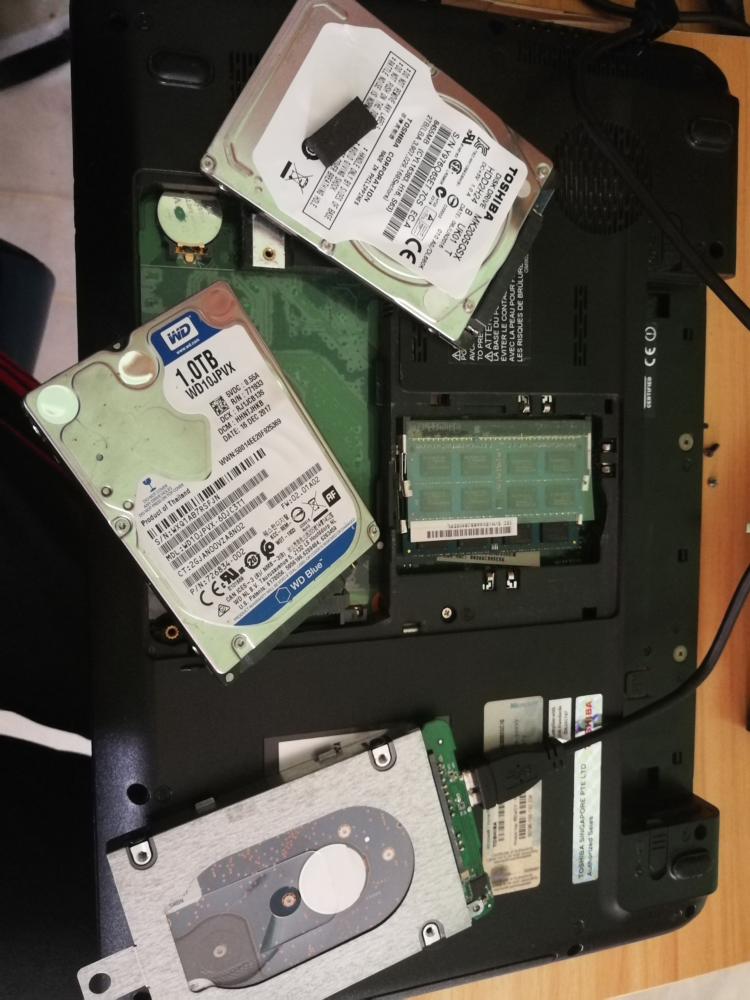
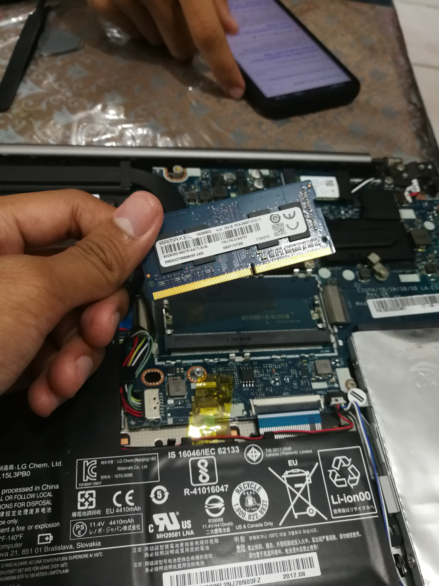
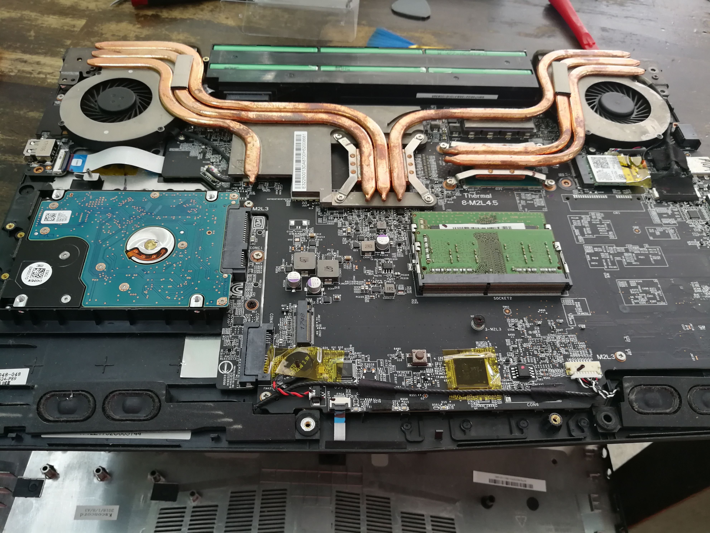
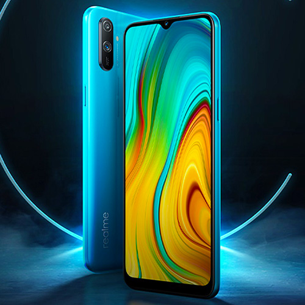
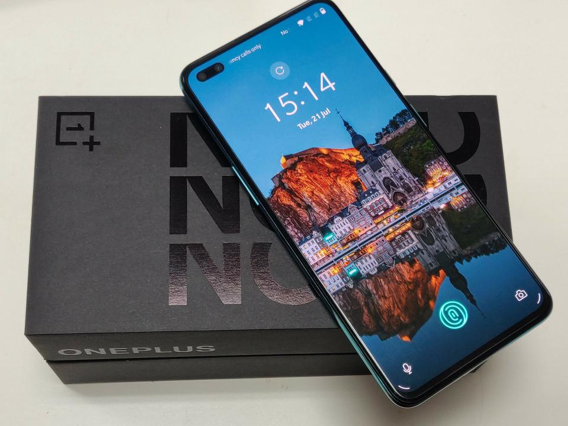
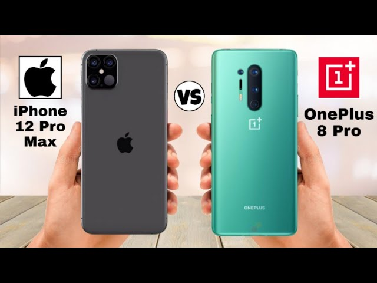

|
First and the most thing I excited to express is about my obession toward technology because we can see how technology evolve from time to time to ease every thing we human
do in daily life, to set an example the system of communication we always use even before we free from colomialism, our great granparents used to write a letter to communicate
then it evolve to email and now we use Internet to communicate with each others with now our country is seek to bring 5G network technology to replace the 4G. Of course this
make me more excited and I am looking forward to it. The thing is in Technology I more interested in PC hardware and Smartphone and in this portfolio I will explain my
experience and catch up with this of obession
|

news about 5G , Source: Google.com
|

CEO of AMD introduce new Generation of Ryzen 5000, Source: google image
|
The first and the best of all about technology is how PC hardware evolves and not just that, most of the PC company allowed us, users to customize our PC hardware
such as CPU, Motherboard (Mobo), RAM, casing, graphic card (GPU), power supply (PSU) and storage, also we can add others features to improve our PC performance or to
make our PC looked beautiful such as All-In-One water cooling and RGB fan. Nowdays, CPU or we call central processing unit for PC often associated with giant companies
which are AMD and Intel. This two company always compete to bring good CPU to users. They must consider the clock of CPU, power usage of CPU or we call it TDP and with
the high power comes with high temperature for CPU that can cause CPU downclock and harm the CPU, for that they also has to consider how to give lowered TDP and
lowered temperature but with high clock speed.Once upon a time users always choose Intel for the good processor but starting from 2016 AMD comes out with their first
generation of CPU Ryzen that beats all the Intel's CPU in term of multicore, temperature, clock speed and most important things is most affordable CPU that time.
Now Ryzen has evolve much better with 5th generation and beat all factor of Intel including single core that make Intel so much special once upon a time, but it not posibble that Intel will
make comeback later on. AS a PC enthusiast, I also want to build my own PC but for now I need to save my money more because all the hardware that I want is a bit pricy.
Next of this paragraph is list of hardwares that I want.
|
| Motherboard |
Asrock B550M Steel Legend |
| CPU |
Ryzen 5 5600X 6-cores 12-thread |
| GPU |
Zotac Gaming Geforce RTX 3070 Twin Edge |
| casing |
Tecware forge M ARGB Edition |
| PSU |
650 watt Cooler Master |
| RAM |
PNY 8GBx2 XRL8 RAM |
| Storage |
PNY 256GB SSD |
| 2TB HDD Seagate |
| Additional |
Tecware Mirage All-In-One water cooling |
|
|
In addition, not only I gain knowledge in PC hardware but I accquire skill to repair, service and upgrade laptop and PC. I accquired skill in semester 4 while our
country is in lockdown because of Covid-19 and UiTM postpone thier study plan, I am used holiday that UiTM gave to fully understand how our PC and computer work in Youtube, since I
always want to study this kind of skill to ease my family and friends. This skill help a lot of my family and friend, even myself because my laptop was the first to test
my skill. Then my mother asked me to repair the old laptop from 2012 model that has not been turn on for a long time, but i manage to repair it and upgrade the hardware of
that laptop. Time after time my friend know that I can service laptop, they asked me to look the problem of their laptop since the lockdown in our country everyone has to continue
thier study via online learning and I am willing to do it without charge single one of them because I like to do it and maybe I can help them with this skill atone for sin that I did
before this. I hope that I can study more about this skill.
One of the video from Youtube where I learn how to upgrade RAM
|
 
 

All the photos I took while repair, service and upgrade laptop
|
|
Beside PC hardware, I also a smartphone enthusiast even before I gain knowledge about PC hardware, smartphone was the first that I enthusiast beacuse in 2017 I decided to buy a new
phone but I was sceptical about which smartphone should I buy and that was the starting I read and update about the news of smartphone until now, even I has bought my new phone in 2017
but it already been 3 years since then. Honestly, I felt keep updated to PC hardware news much better than smartphone because most of the smartphone company used to offered the smartphone
with the high price tag such as Samsung and Apple but everyone know that smartphone can't beat laptop or PC in term of functionality because there are lot limitation using smartphone. I
always asked myself is it worth if I spend thousand of ringgit for something that has a lot of limitation, even all things I bought I used to consider it just like smartphone. Despite that
there are few manufactures that offered the smartphone worth value for money for now because they heard end-users's complained that nowdays smartphone are to expensive to buy, so existed all this
manufacturer to overcome the complained that end-users made. Fun fact from this knowledge, smartphone has 3 main classes which is entry level, mid range and flagship. Entry level was the low power
smartphone and budget since it use chipset that are got to perform only daily basic task. While, mid-range was a class which offer the upgradability than entry level but less performance than
flagship, also with mid price tag around RM 600 to RM 2000. The last class is flagship which offered the best performance and features for all thing such as gaming that can make a
heavy load on CPU, this smarphone come with price tag RM 2000 and above such as Iphone series from Apple and Galaxy S series from Samsung but certain manufacturer offered this class
with less than RM 2000 price tag like POCOPHONE F2 pro from subrand of Xiaomi which is Poco
|

Example of entry level smartphone, Source: google image
|
|
 
Example of mid-range and flagship smartphone, Source: google image
|
| JUMP TO QUICK LINK |